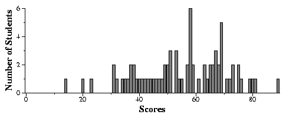

Jim Plank
Files
General Comments
In general, I was satisfied with the exam. Although it may have put you
into a slight panic, there was enough time to at least answer each
question competently.
I suggest that you go over all of the files above. In particular, if
you missed any points on a question, you should look at the
correct answer.
Look at the histogram files above, and the plots below to get a sense
of how you did in comparison to the rest of the class.
Assigning Grades
In assigning grades, I first like to set the basic competence level.
I expected everyone to be able to do the following:
- Get questions 1-3 completely correct. That's 9 points.
With the exception of knowing
what hexidecimal is, this question is one that you should have been
able to answer correctly coming out of CS102.
I did not expect so many people to
miss question 3.
- Get question 4. I also expected most to get question 5. I expected
confusion on questions 6 and 7. Call it 6 points for these four.
- I expected everyone to get question 8, and eveyone to get at least
three points on question 9. I figured that the other two would
confuse a little. That's 7 more points for these four questions.
- I expected many people to be confused with questions 12-14, but I
hoped that at the very least, the answer b on 12, and
c on 14 would jump out at you. Call it six points.
- I honestly expected everyone in the class to get question 15, and
be able to do it in five minutes. If you did not get this question,
you should consider yourself behind in this class, and you should
practice writing little programs that do things like this one.
Again, this is basically CS102 material. I expected 10 points out
of this one.
- Here, I expected panic, but I held your hand through the question,
certainly enough to get:
- 2 points for variable declarations
- 1 point for error checking argc
- 2 points for setting n and error checking (note, this
does not assume that you did the error checking
correctly)...
- 1 point for calling fopen()
- 2 points for calling malloc()
- 1 point for calling new_inputstruct()
- 2 points for having an input loop that ends on n
elements.
- 1 points for having a loop to write the output.
That's 12 points for just filling in the slots of the answer sheet,
without even understanding how to do the program too well.
That makes 51 points, which I will set as the B level. If you are below
this, or if you missed any of the above points, you should review the material
that you missed.
With that in mind, here are the letter grades that I would assign to the test
scores:
- 75 and above: A+
- 67 to 74: A
- 60 to 67: B+
- 51 to 59: B
- 45 to 50: C+
- 40 to 44: C
- 30 to 39: D
- Under 30: F
General Data
Exam Score Histogram

Tukey Plots
Tukey plots are kind of wierd, but give you a good deal of information
in a small amount of space. The way they go is:
- The line goes from the worst score to the best score.
- The box goes from the first quartile (i.e. 25% of the scores are
at or worse than the score at the bottom of the box) to the
third quartile ((i.e. 25% of the scores are
at or better than the score at the top of the box).
- The dot is the mean (average) of all scores.
- The little hash marks in the box is the median score (this is the
score in the middle -- half are greater or equal to this score, and
half are less than or equal to this score).